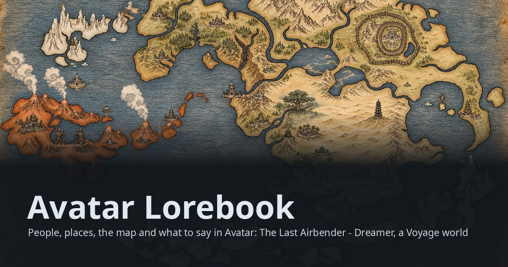

Act 02 · The Four Nations
Ladies, gentlemen, and that bison:
Avatar Lorebook
The whole known world on one map: the Fire Nation's islands to the west, the great continent of the Earth Kingdom with Ba Sing Se in its north-east and the Si Wong Desert at its heart, the Southern Water Tribe on the South Pole continent, the Northern Water …

Step right up! Mind the hat.
The whole known world on one map: the Fire Nation's islands to the west, the great continent of the Earth Kingdom with Ba Sing Se in its north-east and the Si Wong Desert at its heart, the Southern Water Tribe on the South Pole continent, the Northern Water Tribe at the top of the world, and the four Air Temples on their peaks. The Spirit World lies beside it, entered by meditation or a solstice, never by road.
- People
- Places
- Map
- Districts
- Factions
- Creatures
- Lore
- New player guide
- Quests
- What to say
- Character planner
- Abilities
- Traits
- Skills
- Items
- Story starts
- Game modes
- Music